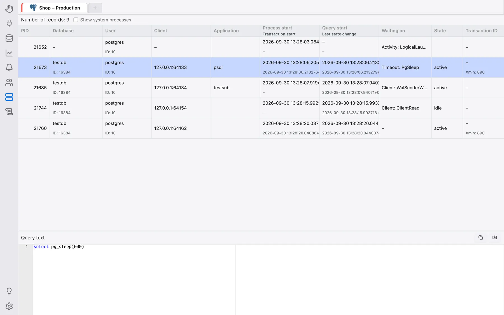
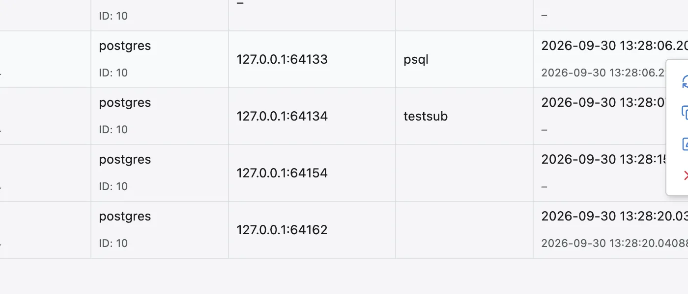

Utenti connessi
La sezione Utenti connessi mostra chi è connesso in questo momento a un server di database — i backend PostgreSQL, i thread MySQL/MariaDB, le sessioni Oracle e SQL Server, le connessioni (attachment) Firebird — che cosa sta facendo ciascuno e permette di terminarne uno. Sostituisce le precedenti voci specifiche per motore Backend/Elenco processi/Sessioni del menu contestuale dell’albero del database.
Supportati: PostgreSQL, MySQL, MariaDB, Oracle, SQL Server e Firebird. SQLite non ha un concetto simile e mostra La visualizzazione degli utenti connessi non è supportata per le connessioni ….
Aprire la sezione
Fai clic sull’icona Utenti connessi nella barra laterale sinistra. Come Monitoraggio, Notifiche e Permessi, lavora su una connessione già aperta nella sezione Database: in alto viene mostrata la striscia delle schede di connessione aperte e l’elenco si riferisce alla scheda selezionata. Se non c’è alcuna connessione aperta mostra Nessuna connessione aperta.
L’elenco viene caricato quando entri nella sezione e ogni volta che passi a un’altra scheda di connessione; non si aggiorna da solo. Per ricaricarlo, fai clic con il tasto destro sulla griglia e scegli Aggiorna. Il numero di righe è mostrato sopra la griglia (Numero di record: …).

Colonne
Le colonne sono raggruppate in modo compatto (ad esempio un ID sotto un nome, oppure indirizzo e porta su un’unica riga); passando il mouse sull’intestazione di una colonna viene spiegato che cosa mostra e da quale colonna del catalogo proviene.
- PostgreSQL (
pg_stat_activity): PID, Database, Utente, Client, Applicazione, Avvio del processo / Avvio della transazione, Avvio della query / Ultimo cambio di stato, In attesa di, Stato, ID transazione, ID query, Tipo di processo. - MySQL/MariaDB (elenco dei processi): Utente (con l’ID della connessione), Host, Database, Comando, Tempo (s), Stato.
- Oracle (
v$session): SID (con Serial#), Utente, Stato, Schema, Client, Programma, Modulo / azione, Info client, Ora di accesso, Inattivo (s), ID SQL, In attesa di, SID bloccante. - SQL Server (sessioni utente): ID sessione, Nome di accesso, Host, Programma, Stato.
- Firebird (
mon$attachments, esclusa la connessione di OmniDB stesso): ID di connessione, Utente, Indirizzo remoto, Stato.
Per PostgreSQL e Oracle i processi di background/di sistema sono nascosti per impostazione predefinita; seleziona Mostra i processi di sistema sopra la griglia per includerli (la casella di controllo compare solo quando esistono righe di questo tipo).
Visualizzare la query di una sessione
Per PostgreSQL, MySQL e MariaDB, un clic su una riga apre sotto la griglia il pannello Testo della query con l’istruzione che quella sessione sta eseguendo (o ha eseguito per ultima), con evidenziazione della sintassi e in sola lettura. Da lì puoi copiarla, oppure usare Apri in una nuova scheda query per continuare a lavorarci in una normale scheda Query, ad esempio per eseguirne l’Explain.
Terminare una sessione
Fai clic con il tasto destro su una riga e scegli Termina. Dopo la conferma, OmniDB
chiude quella sessione nel modo proprio del motore — pg_terminate_backend() su
PostgreSQL, KILL su MySQL/MariaDB e SQL Server, ALTER SYSTEM KILL SESSION …
IMMEDIATE su Oracle, l’eliminazione della riga da mon$attachments su
Firebird — e ricarica l’elenco. Serve il privilegio corrispondente sul server di database. Lo
stesso menu contestuale offre anche Copia e Visualizza contenuto per la cella
su cui hai fatto clic.
